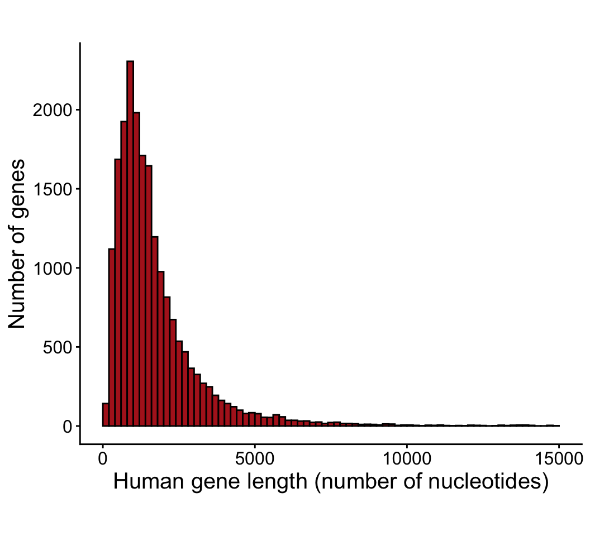
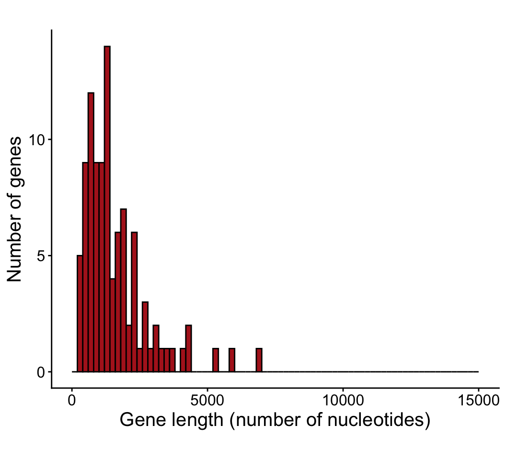
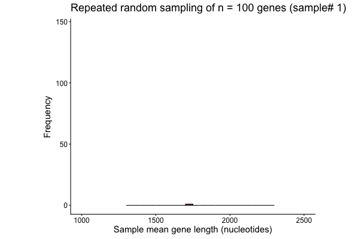
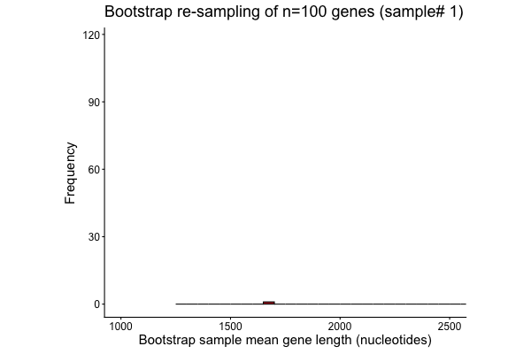

The data are the lengths (in nucleotides) of exons of the longest transcript of all 20,076 known human coding genes in the human genome. That’s how many proteins you’re made of. This can be regarded as a known population for this exercise.
(Homo sapiens genome assembly GRCh38.p14, Annotation: GCF_000001405.40-RS_2025_08).
Gene lengths are truncated at 15K base pairs (the largest gene is titin with 107,973 nucleotides!).
library(ggplot2)
x <- read.csv("Homo sapiens gene lengths largest transcript.csv")
ggplot(x, aes(x = base.pairs)) +
geom_histogram(fill = "firebrick", col = "black",
breaks = seq(0, 15000, 200), closed = "left") +
coord_cartesian(xlim = c(0, 15000)) +
labs(x = "Human gene length (number of nucleotides)", y = "Number of genes") +
theme_classic() +
theme(aspect.ratio = 0.80, text = element_text(size = 15), axis.text = element_text(size = 12))
c(mu = mean(x$base.pairs[x$base.pairs <= 15000]))## mu
## 1712.062
Population gene lengths are truncated at 15K base pairs.
x100 <- sample(x$base.pairs[x$base.pairs <= 15000], size = 100)
x100 <- data.frame(base.pairs = x100)
# Save it
write.csv(x100, "Homo sapiens random sample 100 gene lengths.csv", row.names = FALSE)
ggplot(x100, aes(x = base.pairs)) +
geom_histogram(fill = "firebrick", col = "black",
breaks = seq(0, 15000, 200), closed = "left") +
labs(x = "Gene length (number of nucleotides)", y = "Number of genes") +
theme_classic() +
theme(aspect.ratio = 0.80, text = element_text(size = 15), axis.text = element_text(size = 12))
c(xbar = mean(x100$base.pairs), SE = sd(x100$base.pairs)/sqrt(100))## xbar SE
## 1762.6500 200.8437R has repeatedly taken a random sample of 100 genes from the population, calculated the sample mean \(\bar X\), and plotted the result.
The animation shows how the sampling distribution of \(\bar X\) is the probability distribution of values that we might obtain when we take a random sample and calculate the sample mean.

Randomly re-sample n=100 genes 1000 times with replacement from the original sample of 100 genes and calculate \(\bar X\) each time.
mysample100 <- read.csv("Homo sapiens random sample 100 gene lengths.csv")$base.pairs
# Randomly sample n=100 x 1000 times with replacement from the sample and get xbar
z <- sample(mysample100, size = 100000, replace = TRUE)
z <- matrix(z, ncol = 1000)
boot_means <- colMeans(z)
c(boot_mean = mean(boot_means), boot_SE = sd(boot_means))## boot_mean boot_SE
## 1754.7661 195.8254
R has repeatedly taken a random re-sample of 100 genes from the original sample of 100 genes (with replacement), calculated the bootstrap sample mean \(\bar X\) each time, and plotted the result.
The process imitates the repeated sampling of 100 genes from the actual population, but uses the available sample instead.

© 2009-2026 Dolph Schluter